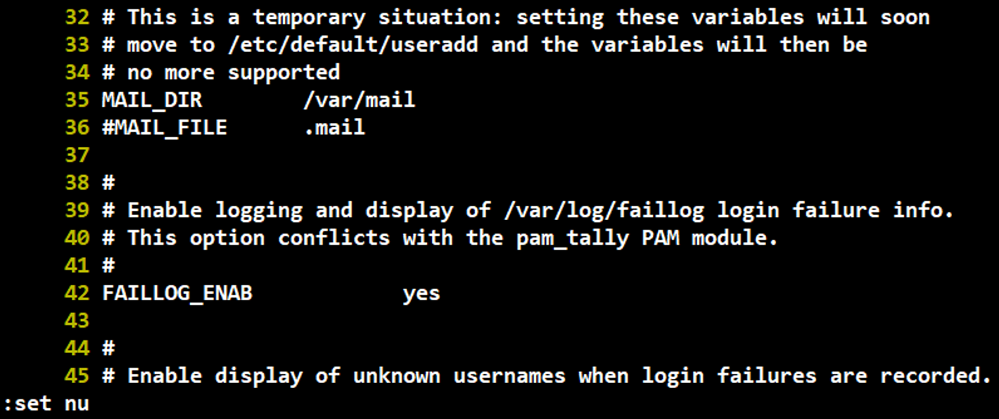
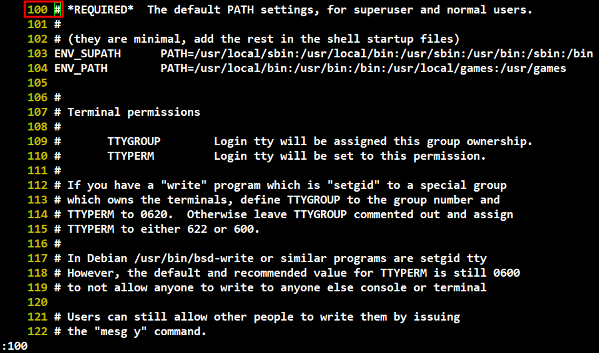
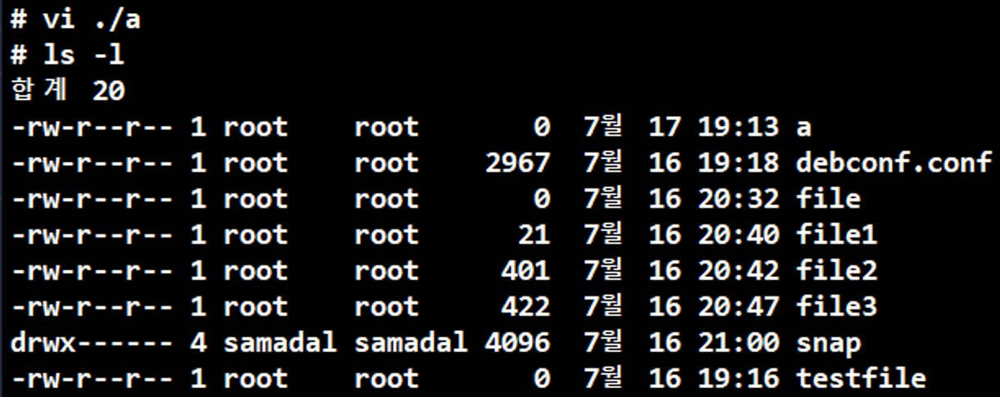

vi 편집기
# vi
빈 문서 실행(즉, 문서 파일 작업)
Emacs와 함께 유닉스 환경에서 많이 쓰이는 문서 편집기
명령, 실행(EX), 입력 모드가 있다.
문법
vi [편집할 파일명]
지정한 파일을 열고 편집
:set nu

vi 편집기에서 줄 번호를 활성화 시켜준다.
:[숫자]

vi 편집기에서 원하는 줄 번호로 이동

없는 파일을 vi 편집기로 실행시키고
:wq로 저장하고 끄면 새로운 파일이 생긴다.